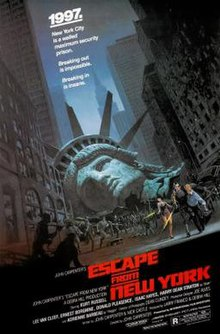
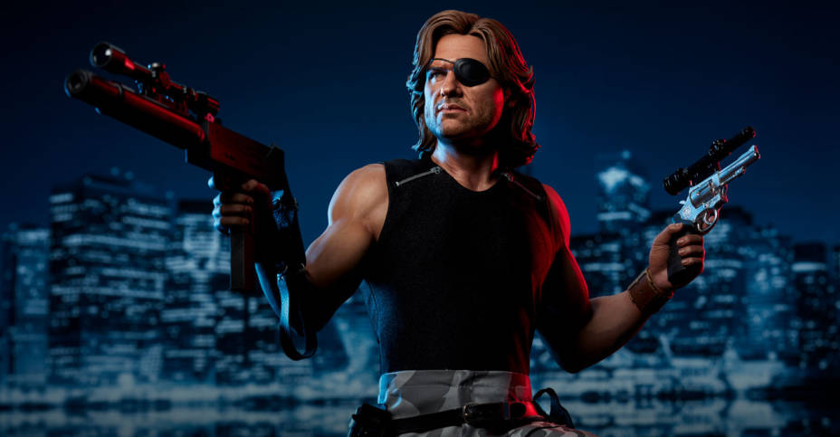

Welcome to the action page, enjoy from the movies
The weekly movie:Escape From New York
skip the plot and go watch the trailerThe plot:
In a dystopian 1988, amidst total war against an alliance of China and the Soviet Union, the United States government has turned Manhattan into a giant maximum-security prison to deal with a 400% increase in crime. A 50-foot (15 m) wall surrounds the island, bridges have been mined, rivers are patrolled by helicopters and all prisoners unlucky to be alive are sentenced to life terms in Manhattan. In 1997, while flying President John Harker to a peace summit in Hartford, Air Force One is hijacked by a guerrilla fighter of the "National Liberation Front of America" (named in reference to the Viet Cong) posing as the stewardess. Unable to regain control, Secret Service agents attach a tracking device to the President's arm and handcuff him to a briefcase of sensitive documents before putting him in the plane's escape pod. The aircraft crashes while the pod is ejected. Police are dispatched to rescue the President. Romero, the right-hand man of the Duke of New York, a powerful crime boss, shows them a severed finger with the President's signet ring and warns that he will be killed if any further rescue attempts are made. Meanwhile, former Special Forces soldier Snake Plissken is about to be sent into Manhattan after being convicted of robbing the Federal Reserve. Police Commissioner Bob Hauk offers a deal to Snake: if he rescues the President in time for the summit, Hauk will arrange a full presidential pardon. To keep Snake from going rogue, Hauk has him injected with micro-explosives that will sever his carotid arteries in 22 hours. If Snake is successful, Hauk will neutralize the explosives. Using a stealth glider to land atop the World Trade Center, Snake follows the President's tracker to a vaudeville theater only to find it on the wrist of a deluded vagrant. Convinced the President is dead, Snake radios Hauk but is told that he will be shot down if he returns without the President. Inspecting the escape pod, Snake is ambushed by dozens of starving "Crazies", and accidentally drops and destroys his radio while trying to flee. He is rescued by "Cabbie", a jovial old man who drives an armored taxi. Cabbie takes Snake to Harold "Brain" Hellman, an adviser to the Duke and a former associate of Snake's. Brain, a brilliant engineer, has established a small gasoline refinery, fueling the city's remaining cars and tells Snake that the Duke plans to lead a mass escape across the Queensboro Bridge by using the President as a human shield and following a landmine map that Brain has drawn up. Snake forces Brain and his girlfriend Maggie to lead him to the Duke's hideout at Grand Central Terminal. Snake finds the President but gets shot in the leg with a crossbow bolt and overpowered by the Duke's men.
While Snake is forced to fight against Duke's champion Slag in a deathmatch, Brain and Maggie kill Romero and flee with the President. Snake kills Slag and finds Brain, Maggie and the President at the top of the World Trade Center trying to escape in the glider. The inmates drop it off the roof, so the group returns to street level and encounters Cabbie who offers to take them across the bridge. Cabbie reveals that he bartered with Romero for the contents of the briefcase: a cassette tape which contains information about nuclear fusion, intended to be an international peace offering. The President demands the tape but Snake claims it. The Duke pursues them onto the bridge in his customized Cadillac, setting off mines as he tries to catch up. Brain guides Snake but they hit a mine and Cabbie is killed. As they continue on foot, Brain accidentally stumbles into another mine. A distraught Maggie sacrifices herself to slow down the Duke. Snake and the President reach the containment wall and guards hoist the President up. The Duke opens fire with Snake's MAC-10, killing the guards before Snake subdues him. He attempts to shoot Snake as he is being lifted up by the rope but the President takes up a dead guard's rifle, violently guns down the Duke and hoists Snake to safety. Hauk's doctor saves Snake's life with just seconds to spare. As the President prepares for a televised speech to the leaders at the summit meeting, he thanks Snake and tells him that he can have anything he wants. Snake then asks how he feels about the people who died saving his life. The President offers only half-hearted regret and lip service for their sacrifice, and Snake walks away in disgust. An impressed Hauk offers him a job as his deputy but Snake just keeps walking. The President's live speech commences and he plays the cassette tape. To his embarrassment, it only plays Cabbie's favorite song, "Bandstand Boogie". As Snake walks away a free man, he tears the magnetic strip out of the real tape.
The trailer for the movie "Escape From New York":